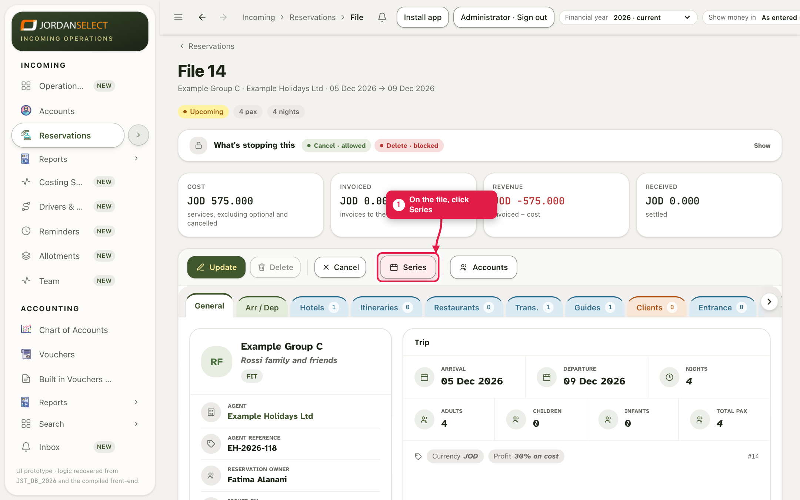
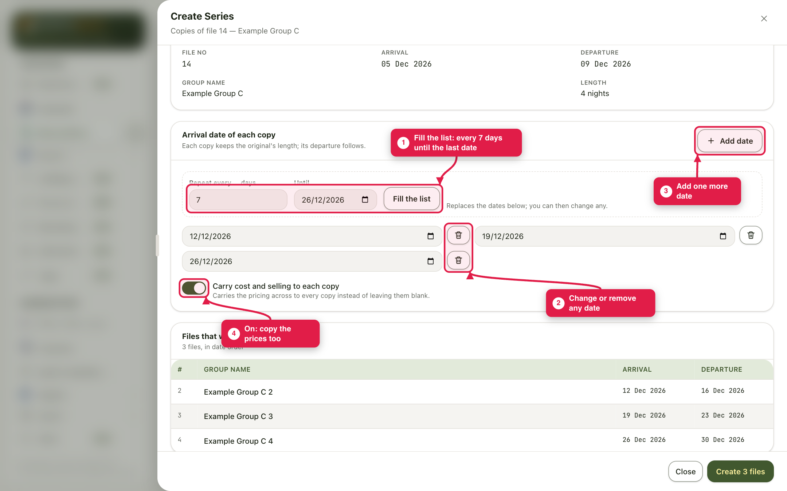
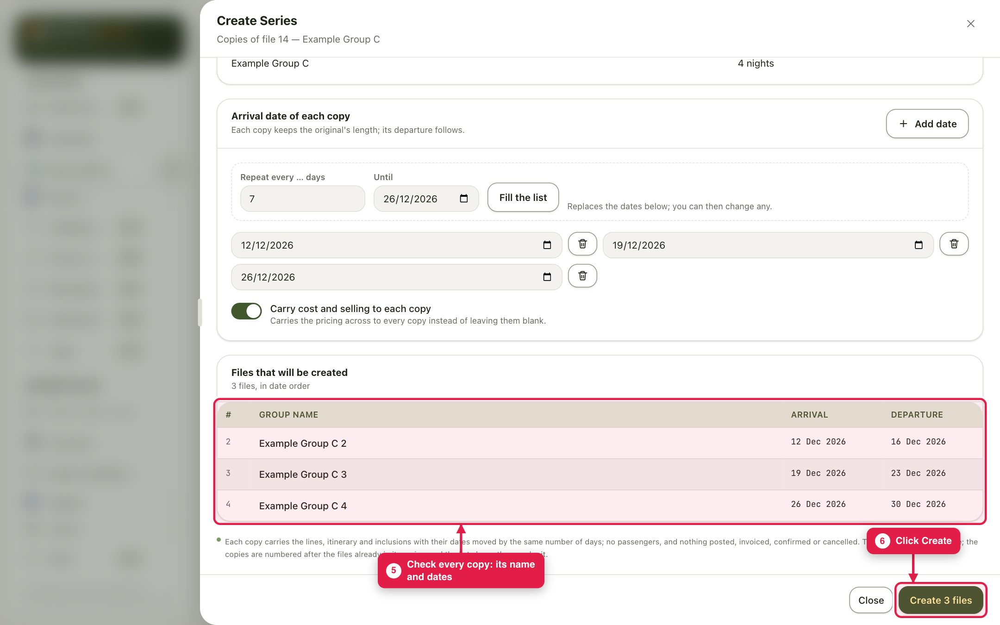
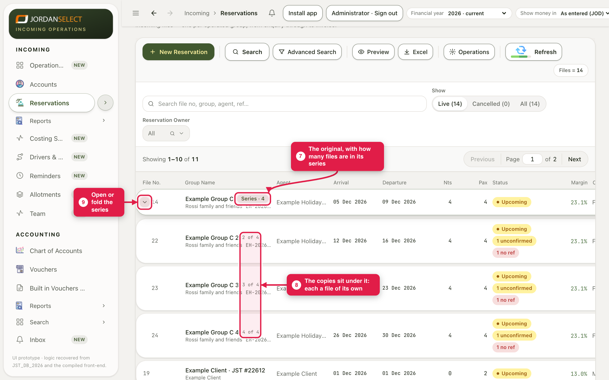

The agent sends the same trip on several dates. Make one file, then copy it to every date in one go.
WhoSales
WhereThe file → Series
Takes2 minutes, however many copies
You needA finished first file, and the dates of the others
How it works
Series copies the file to the dates you pick. Each copy is a file of its own, with its own number. It keeps the original’s length, and every service and itinerary day moves by the same number of days.
The original keeps its name. The copies are called after it with a number: Example Group C 2, 3, 4. Add more dates later, from the original or any copy, and the numbers carry on.
Example in this guide: Example Group C (5 December) copied to 12, 19 and 26 December, with cost and selling carried across.
A series made in QuotaIf the file came from a Quota series, add new dates in Quota, not here. The CRM refuses and says so. Quota sends every date of its series to the CRM itself.
1. Pick the dates
1
Open the first file and click Series.

Series is in the file’s button row.
2
For regular dates, type how often in Repeat every … days, the last date in Until, and click Fill the list. The arrival dates appear below. Change any of them, or remove one with the bin. Click Add date for one more on any day.
3
Turn on Carry cost and selling to each copy to copy the prices too. Leave it off if each date will be priced again.

Every 7 days until 26 December gives 12, 19 and 26 December.
4
Under Files that will be created, check each copy’s name and dates. When they are right, click Create 3 files (the button counts the copies).

Nothing is created until you click Create.
2. The copies
5
In the Reservations list the original shows Series · 4: it and its three copies. Click the arrow next to its number to open the series. Each copy sits under it with its own number and dates, and “2 of 4”, “3 of 4” and so on.

Files 22, 23 and 24 are the copies of file 14.
A copy carries the services, itinerary and inclusions. It does not carry passengers, reminders, attachments, invoices or postings. Its hotels start unconfirmed, with no confirmation number.
3. Check your work
There is one copy for every date, and no extra.
Each copy’s hotels and transport have that copy’s dates.
Ask every hotel for each copy’s dates (guide 5): the copies’ hotels are unconfirmed until it answers.
Questions? Ask the reservations manager. · Last checked: 11 Nov 2026 · Screens shown are from a test copy of the CRM with made-up data.